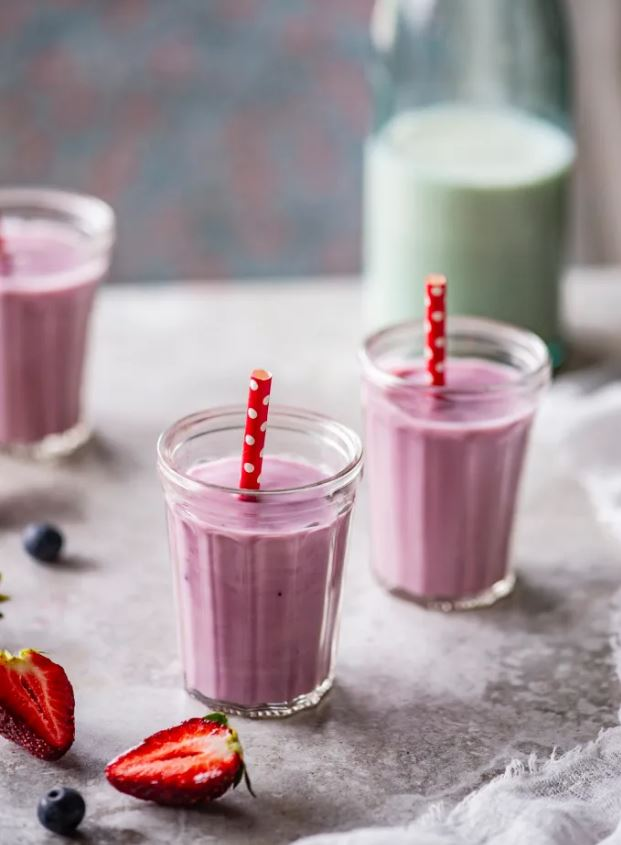
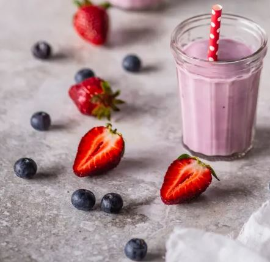

Retsept

Koostisosad
Kogus
Pett või Keefir
300 g
Värskeid või külmutatud maasikaid mustikaid, vaarikaid vm marju
300 g
Mesi
2-3 sl
Vesi
Vajadusel
Vanillisuhkur
Soovi korral
Valmistamine
Tõsta kõik koostisosad blenderisse ja töötle ühtlaseks.
Paksust reguleeri vee lisamisega.
Marju võid smuuti sisse kombineerida vastavalt oma eelistustele ja hooajale või siis sügavkülma sisule.

Originaal koduleht